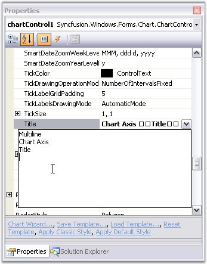
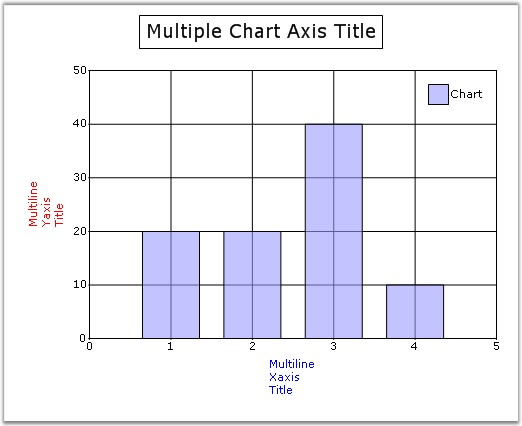
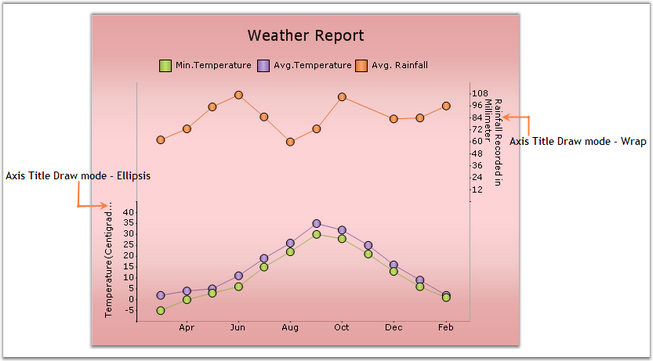

Essential Chart provides properties to set custom titles for the axes. Set the title text for an axis using Title property. Customize this text using TitleColor and TitleFont properties.
|
Chart Axis Property |
Description |
|
TitleColor |
Sets the color for the title text of the axis. |
|
TitleFont |
Sets the font style for the title text. |
|
[C#]
//Sets custom title for x- axis. this.chartControl1.PrimaryXaxis.Title = "x-axis"; this.chartControl1.PrimaryXaxis.TitleColor = Color.Red; this.chartControl1.PrimaryXaxis.TitleFont = new Font("Arial", 10); //Set custom title for y-axis in the similar method. |
|
[VB]
'Sets custom title for x- axis. Me.chartControl1.PrimaryXaxis.Title = "x-axis" Me.chartControl1.PrimaryXaxis.TitleColor = Color.Red Me.chartControl1.PrimaryXaxis.TitleFont = New Font("Arial", 10) 'Set custom title for y-axis in the similar method. |
Multiline Chart Axes Title
You can now wrap the axes titles and display them as multiline text. Set multiline title text in Axis.Title property through designer as follows. Press ENTER key to begin a new line. Press CTRL+ENTER to set the text entered.

Figure 264: Setting Multiline Axis Title Through Properties Window
The below screenshot illustrates a chart with multiline axes titles.

Figure 265: Chart with Multiline Axes Titles
Drawing Mode of Title Text
You can now display partial axis title with an ellipsis at the end of text, whose text length exceeds the axis length. There is also an option to wrap the title text, in addition to the multiline axes title feature, which is discussed above. The Axes.TitleDrawMode property is used to control this behavior.
|
Chart Axis Property |
Description |
|
TitleDrawMode |
Sets the drawing mode of the axis title. It can be Ellipse, Wrap or None. By default it is set to None. |
|
[C#]
//Setting drawing mode of y-axis title this.chartControl1.PrimaryXAxis.TitleDrawMode = ChartTitleDrawMode.Ellipsis; //Setting drawing mode of secondary y-axis title this.secYAxis.TitleDrawMode = ChartTitleDrawMode.Wrap; |
|
[VB]
'Setting drawing mode of y-axis title Me.chartControl1.PrimaryXAxis.TitleDrawMode = ChartTitleDrawMode.Ellipsis 'Setting drawing mode of secondary y-axis title Me.secYAxis.TitleDrawMode = ChartTitleDrawMode.Wrap |

Figure 266: Y-Axis TitleDrawMode = "Ellipsis"; SecYAxis TitleDrawMode = "Wrap"